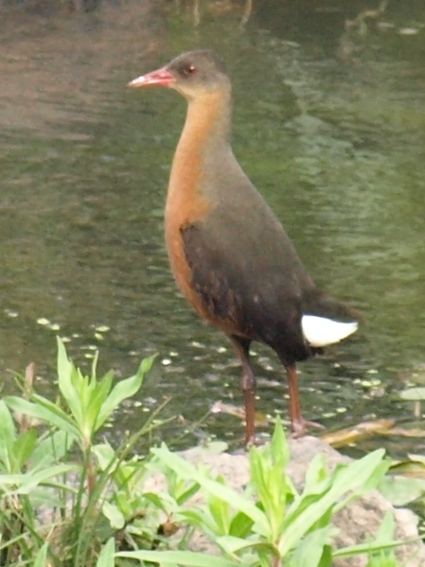
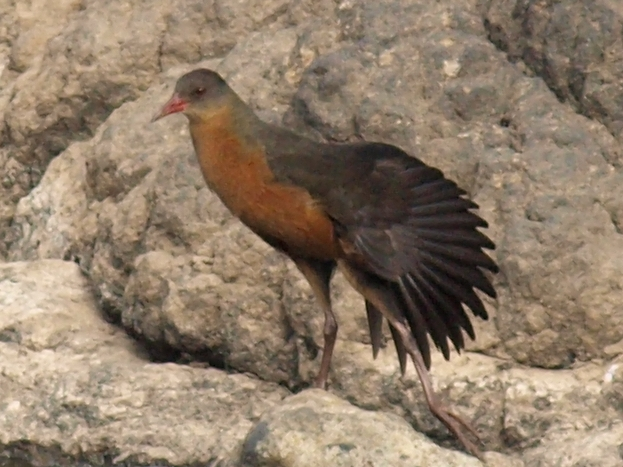
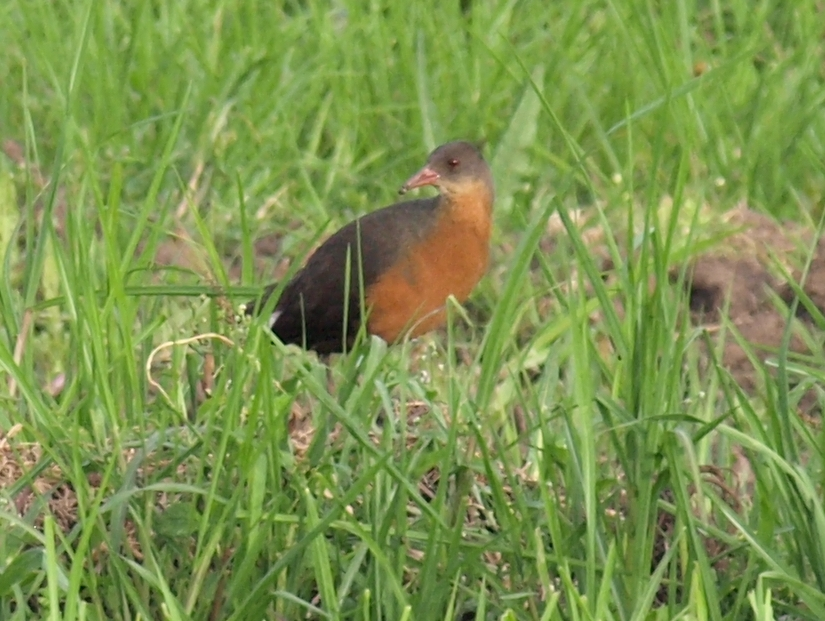

|  |  |  |
By the irrigated allotments in the college. Several times I had seen their white tails in the distance as they flee through the irrigation ditches. This photograph was taken across the river where they had fled when planting was in full swing.(8th Feb 2009)